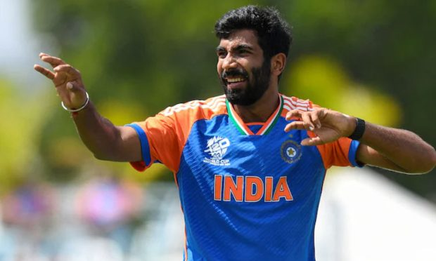

ಚಾಂಪಿಯನ್ಸ್ ಟ್ರೋಫಿ ಆಡ್ತಾರಾ ಜಸ್ಪ್ರೀತ್ ಬುಮ್ರಾ? ಆಯ್ಕೆ ಸಮತಿ ತೀರ್ಮಾನವೇ ಅಂತಿಮ!

ಆಸ್ಪ್ರೇಲಿಯಾ ಸಿಡ್ನಿ ಟೆಸ್ಟ್ ಪಂದ್ಯದಲ್ಲಿ ಬೆನ್ನುನೋವಿಗೆ ಒಳಗಾಗಿದ್ದ ಭಾರತದ ವೇಗಿ ಜಸ್ಪ್ರೀತ್ ಬುಮ್ರಾ ಬೆಂಗಳೂರಿನಲ್ಲಿರುವ ರಾಷ್ಟ್ರೀಯ ಕ್ರಿಕೆಟ್ ಅಕಾಡೆಮಿಯಲ್ಲಿ(ಎನ್ಸಿಎ)ಯಲ್ಲಿ ಚೇತರಿಸಿಕೊಳ್ಳುತ್ತಿದ್ದಾರೆ. ಸದ್ಯ ವೈದ್ಯರ ಸೂಚನೆ ಮೇರೆಗೆ ಸಂಪೂರ್ಣ ವಿಶ್ರಾಂತಿಯಲ್ಲಿದ್ದಾರೆ. ಪರಿಸ್ಥಿತಿ ಹೀಗಿರುವಾಗ ಮುಂಬರುವ ಚಾಂಪಿಯನ್ಸ್ ಟ್ರೋಫಿಯಲ್ಲಿ ಬುಮ್ರಾ ಆಡಲಿದ್ದಾರಾ? ಎಂಬ ಪ್ರಶ್ನೆ ವ್ಯಕ್ತವಾಗುತ್ತಿದೆ. ಸದ್ಯದ ಮಾಹಿತಿ ಪ್ರಕಾರ ಜಸ್ಪ್ರೀತ್ ಬುಮ್ರಾ ಚಾಂಪಿಯನ್ಸ್ ಟ್ರೋಫಿಯ ಆರಂಭಿಕ ಕೆಲ ಪಂದ್ಯಗಳನ್ನು ತಪ್ಪಿಸಿಕೊಳ್ಳಲಿದ್ದಾರೆ. ಗೈರಾದರೂ ಬಳಿಕ ತಂಡವನ್ನು ಕೂಡಿಕೊಳ್ಳಲಿದ್ದಾರೆ ಎನ್ನಲಾಗಿದೆ. ಟೂರ್ನಿಯ ಮಧ್ಯೆ ತಂಡವನ್ನು ಕೂಡಿಕೊಳ್ಳಲಿದ್ದಾರೆ ಎನ್ನಲಾಗಿದೆ.